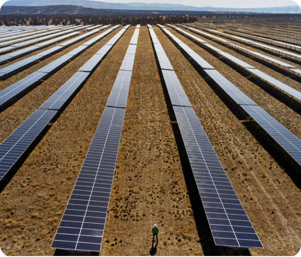

Solar-Powered Schools: Educating the Next Generation about Renewable Energy
Empowering Education with Solar Energy: The Role of Solar-Powered Schools
Solar-powered schools represent a proactive approach to integrating renewable energy into educational
settings, offering students valuable opportunities to learn about sustainability, environmental
stewardship, and renewable energy technologies. By harnessing solar energy to power their facilities and
incorporating solar energy curriculum into their educational programs, these schools play a crucial role
in shaping the next generation of environmentally conscious leaders.

The installation of solar panels on school rooftops not only reduces energy costs but also serves as a
tangible demonstration of renewable energy in action. Students have the opportunity to observe firsthand
how solar energy is captured, converted, and utilized to power their classrooms, offices, and other
facilities. This hands-on experience fosters a deeper understanding of solar technology and its
environmental benefits, inspiring students to become advocates for clean energy solutions.
In addition to physical infrastructure, solar-powered schools incorporate solar energy curriculum into
their
educational programs. From science and technology to social studies and economics, solar energy topics are
integrated across various subjects and grade levels. Students learn about the principles of solar energy,
the environmental impacts of traditional energy sources, and the importance of sustainability. Through
interdisciplinary projects, field trips, and guest lectures, students gain a holistic understanding of
renewable energy and its role in addressing global challenges.
Solar-powered schools instill a sense of environmental stewardship and responsibility in students,
encouraging them to take an active role in protecting the planet. By demonstrating the practical
applications of renewable energy and promoting sustainable practices such as energy conservation and waste
reduction, these schools empower students to make informed decisions and take positive action in their
communities. Solar energy becomes more than just a source of power; it becomes a catalyst for
environmental awareness and activism.
By integrating solar energy into education, solar-powered schools inspire students to pursue careers in
science, technology, engineering, and mathematics (STEM) fields, particularly those related to renewable
energy and sustainability. Students develop critical thinking skills, problem-solving abilities, and a
passion for innovation as they explore the potential of solar energy to address pressing global
challenges. As future leaders and decision-makers, these students are poised to drive the transition to a
clean energy future and shape a more sustainable world for generations to come
Solar-powered schools play a vital role in educating the next generation about renewable energy,
sustainability, and environmental stewardship. By harnessing the power of solar energy and integrating it
into their educational programs, these schools empower students to become agents of positive change and
leaders in the transition to a sustainable future. Through hands-on learning experiences,
interdisciplinary projects, and a commitment to environmental responsibility, solar-powered schools are
shaping environmentally conscious citizens who are equipped to address the complex challenges of the 21st
century.